V03 authentic photography archive · 30 review files
Every asset retains the unchanged acquired provider file in originals/, display derivatives in display/, full license/attribution/accession metadata in MANIFEST.json and RIGHTS_AND_PROVENANCE_REGISTER.csv, and strict separation from synthetic illustrations. All 6 predecessor Bell Museum archival JPEGs remain untouched in VISUAL_PILOT_REVIEW_PACKAGE/specimens/.
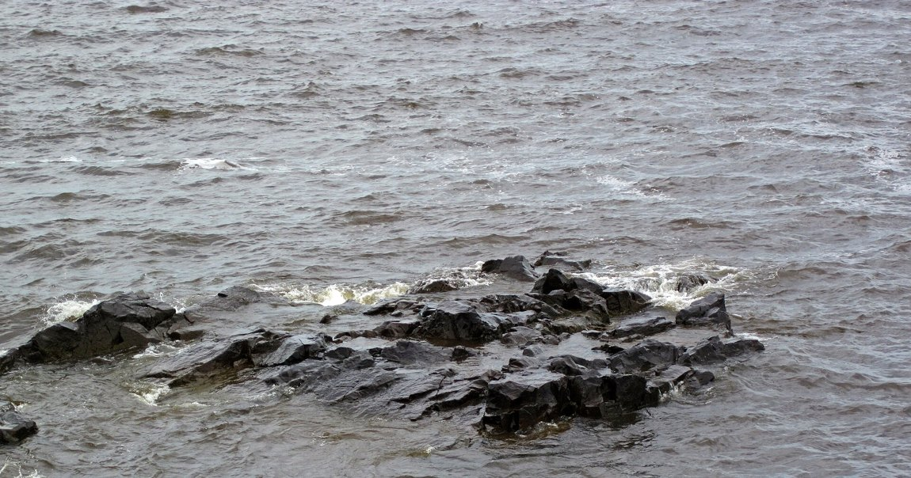
Z08-P01 · Rock ledges at the Lake Superior waterline near Duluth
Authentic open-license documentary/geological/environmental reference photograph
Credit: James St. John · License: CC BY 2.0 (https://creativecommons.org/licenses/by/2.0)
Locality/date: Source record: File:Basalt lava flow (North Shore Volcanic Group, Mesoproterozoic, ~1.1 Ga; Lake Superior shoreline exposure along the North Shore Scenic Railroad line, just northeast of Duluth, Minnesota, USA) 4 (22291214206).jpg; date=2015-06-06 12:44
Original SHA-256: 25b6d99ebc3bb46f… · Acquired provider JPEG
Expert validation: PENDING · Diagnostic: WITHHELD · Consumption: N/A
Provider thumbnail / resized source asset. No mineral specimen scale, accessible slope assessment or close fracture view.
Source record
 Z08-P03 · Chert nodule with a curved fresh-looking fracture surface
Z08-P03 · Chert nodule with a curved fresh-looking fracture surface
Authentic open-license documentary/geological/environmental reference photograph
Credit: James St. John · License: CC BY 2.0 (https://creativecommons.org/licenses/by/2.0)
Locality/date: Source record: File:Chert nodule 2.jpg; date=2024-02-09 17:52:28
Original SHA-256: fdd8a5bfd107e6ba… · Acquired provider JPEG
Expert validation: PENDING · Diagnostic: WITHHELD · Consumption: N/A
Provider thumbnail / resized source asset. Add locality and matched scale-barred feldspar and quartz comparison.
Source record
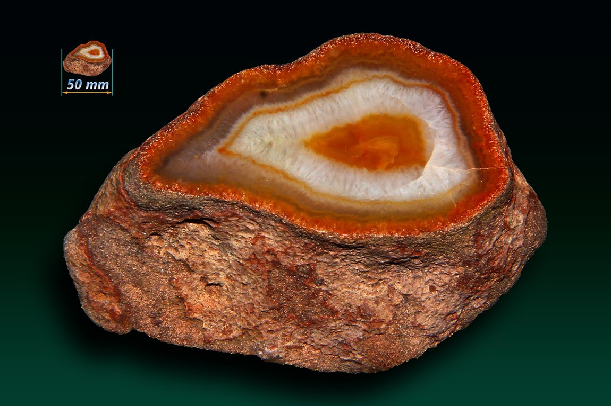
Z08-P08 · Cut banded Lake Superior agate with a marked inset scale
Authentic open-license documentary/geological/environmental reference photograph
Credit: Lech Darski · License: CC BY-SA 4.0 (https://creativecommons.org/licenses/by-sa/4.0)
Locality/date: Source record: File:Agat Lake Superior (Lake superior agate) - Minnesota, USA.jpg; date=2018-03-10 18:20:09
Original SHA-256: da1af339c5b589b8… · Acquired provider JPEG
Expert validation: PENDING · Diagnostic: WITHHELD · Consumption: N/A
Provider thumbnail / resized source asset. Need verified raw exterior, different orientations and similar non-agate controls.
Source record
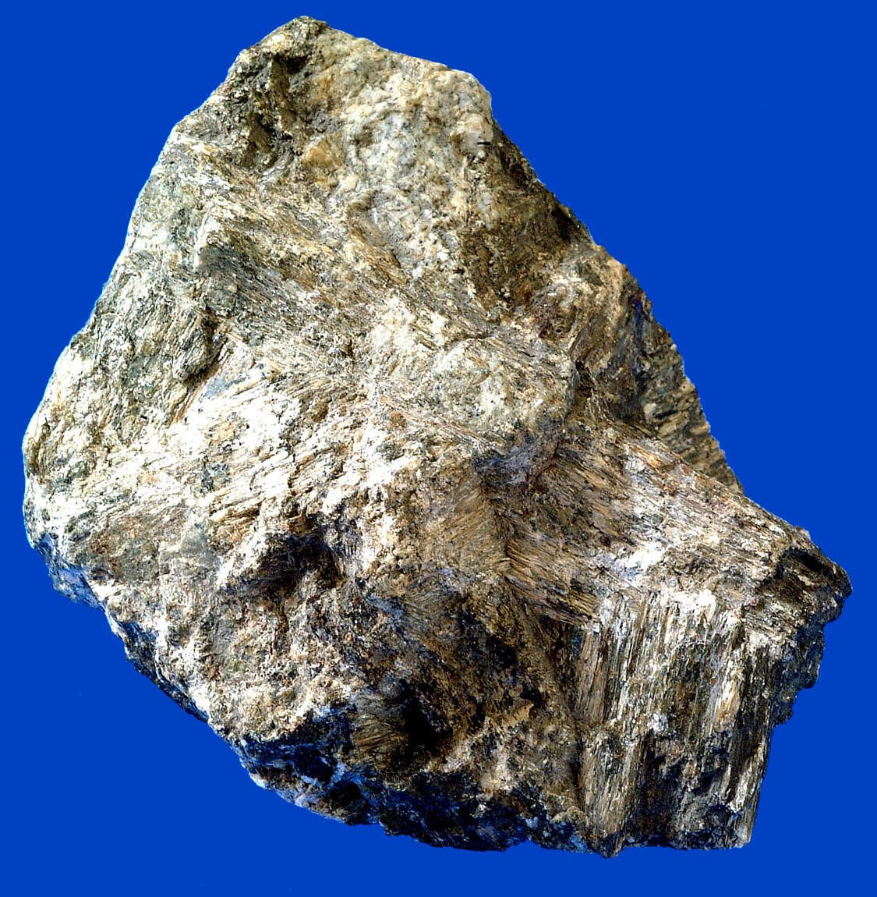
Z08-P26 · Fibrous GeoDIL specimen on blue background
Authentic open-license documentary/geological/environmental reference photograph
Credit: Nessa Eull · License: CC0 (http://creativecommons.org/publicdomain/zero/1.0/deed.en)
Locality/date: Source record: File:Chrysotile and asbestos (GeoDIL number - 2527).jpg; date=22 March 2002
Original SHA-256: e79bcd9a38c9adfd… · Acquired provider JPEG
Expert validation: PENDING · Diagnostic: WITHHELD · Consumption: N/A
Provider JPEG. Only microscopic or laboratory analysis could determine material identity or exposure risk.
Source record
 Z04-P14 · Satellite view of a Lake Erie bloom with archive labels
Z04-P14 · Satellite view of a Lake Erie bloom with archive labels
Authentic open-license documentary/geological/environmental reference photograph
Credit: NASA Earth Observatory image by Wanmei Liang, using Landsat data from the U.S. Geological Survey. Story by Lindsey Doermann. · License: Public domain (https://commons.wikimedia.org/wiki/File:Lake_Erie_Blooms_(153282).jpg)
Locality/date: Source record: File:Lake Erie Blooms (153282).jpg; date=Taken on 13 August 2024
Original SHA-256: 650462b74237c590… · Acquired provider JPEG
Expert validation: PENDING · Diagnostic: WITHHELD · Consumption: N/A
Provider JPEG. Missing shore-level view and sampling. Colour does not verify organism or toxin.
Source record
 Z06-P08 · USFWS side-profile fish image supplied as walleye
Z06-P08 · USFWS side-profile fish image supplied as walleye
Authentic open-license documentary/geological/environmental reference photograph
Credit: USFWS Mountain Prairie · License: Public domain (https://commons.wikimedia.org/wiki/File:Walleye_(Sander_vitreus).jpg)
Locality/date: Source record: File:Walleye (Sander vitreus).jpg; date=2022-02-23 09:01:19
Original SHA-256: a06e4da1062aeb77… · Acquired provider JPEG
Expert validation: PENDING · Diagnostic: WITHHELD · Consumption: N/A
Provider thumbnail / resized source asset. Add same-scale paired regional lookalikes, close mouth and fin characters and verified waterbody.
Source record
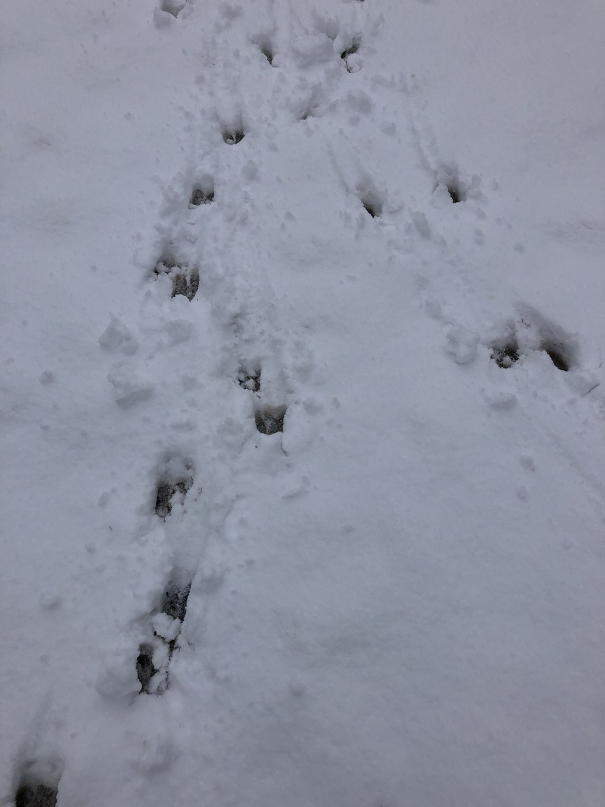
Z06-P25 · Snow trackway with uneven and overlapping impressions
Authentic open-license documentary/geological/environmental reference photograph
Credit: Famartin · License: CC BY-SA 4.0 (https://creativecommons.org/licenses/by-sa/4.0)
Locality/date: Source record: File:2024-02-13 09 26 40 Deer tracks in fresh snow behind a house along Aquetong Lane during a moderate snowstorm in the Mountainview section of Ewing Township, Mercer County, New Jersey.jpg; date=2024-02-13 09:26:40
Original SHA-256: 7f4142bbc2f9a566… · Acquired provider JPEG
Expert validation: PENDING · Diagnostic: WITHHELD · Consumption: N/A
Provider JPEG. No measured track scale or single confirmed animal track sequence.
Source record
 Z11-P38 · NOAA archival towering cloud and anvil
Z11-P38 · NOAA archival towering cloud and anvil
Authentic open-license documentary/geological/environmental reference photograph
Credit: Mr. Herbert Campbell · License: Public domain (https://commons.wikimedia.org/wiki/File:Cumulonimbus_NOAA_gov.jpg)
Locality/date: Source record: File:Cumulonimbus NOAA gov.jpg; date=recorded on source page
Original SHA-256: 3616592b6ba3c0f2… · Acquired provider JPEG
Expert validation: PENDING · Diagnostic: WITHHELD · Consumption: N/A
Provider JPEG. Missing time/location sequence. Cannot predict timing, severity or clear travel.
Source record
 Z12-P40 · Active avalanche dust plume in an Alpine setting
Z12-P40 · Active avalanche dust plume in an Alpine setting
Authentic open-license documentary/geological/environmental reference photograph
Credit: cws.csw · License: CC BY-SA 4.0 (https://creativecommons.org/licenses/by-sa/4.0)
Locality/date: Source record: File:Avalanche from Gross Fiescherhorn.jpg; date=2016-07-16 09:34:04
Original SHA-256: 19937ac3e121aa71… · Acquired provider JPEG
Expert validation: PENDING · Diagnostic: WITHHELD · Consumption: N/A
Provider JPEG. The image cannot establish a cornice, trigger, safe vantage or Upper Midwest analogue.
Source record
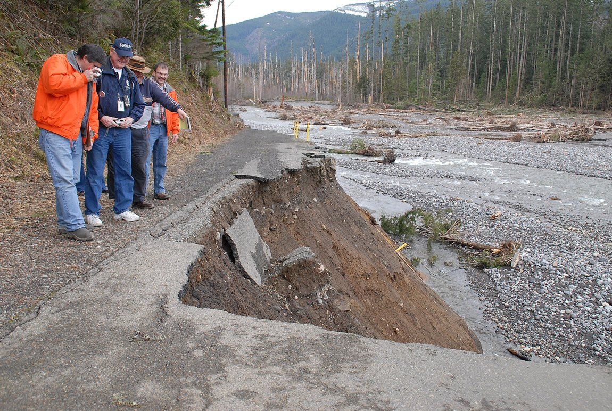
Z15-P24 · FEMA roadway washout after flooding; observers stand at damaged road edge
Authentic open-license documentary/geological/environmental reference photograph
Credit: Marvin Nauman · License: Public domain (https://commons.wikimedia.org/wiki/File:FEMA_-_28207_-_Photograph_by_Marvin_Nauman_taken_on_02-07-2007_in_Washington.jpg)
Locality/date: Source record: File:FEMA - 28207 - Photograph by Marvin Nauman taken on 02-07-2007 in Washington.jpg; date=2007-02-07
Original SHA-256: c1fe3a5c6302df8c… · Acquired provider JPEG
Expert validation: PENDING · Diagnostic: WITHHELD · Consumption: N/A
Provider thumbnail / resized source asset. Illustrates erosion, not a model safe position. No depth, current or road-clearance evidence.
Source record
 Z15-P30 · Distant wildfire smoke plume behind forest
Z15-P30 · Distant wildfire smoke plume behind forest
Authentic open-license documentary/geological/environmental reference photograph
Credit: U.S. Forest Service- Pacific Northwest Region · License: Public domain (https://commons.wikimedia.org/wiki/File:Sugar_and_Miles_Fire_Smoke_Plumes_(42797043485).jpg)
Locality/date: Source record: File:Sugar and Miles Fire Smoke Plumes (42797043485).jpg; date=2018-07-28 16:45
Original SHA-256: 6428592f4d6c3b82… · Acquired provider JPEG
Expert validation: PENDING · Diagnostic: WITHHELD · Consumption: N/A
Provider JPEG. No wind, escape-route or air-quality inference. Source is the U.S. Forest Service Pacific Northwest Region Flickr item 42797043485.
Source record
 Z08-P09 · Limestone bluff and talus attribution from USFWS record
Z08-P09 · Limestone bluff and talus attribution from USFWS record
Authentic open-license documentary/geological/environmental reference photograph
Credit: U.S. Fish and Wildlife Service Southeast Region · License: Public domain (https://commons.wikimedia.org/wiki/File:Karst_limestone_bluff_and_talus_by_Todd_Crabtree_(8497631543).jpg)
Locality/date: Source record: File:Karst limestone bluff and talus by Todd Crabtree (8497631543).jpg; date=2013-02-22 14:18
Original SHA-256: f76f97867f87e8a4… · Acquired provider JPEG
Expert validation: PENDING · Diagnostic: WITHHELD · Consumption: N/A
Provider JPEG. No dissolution close-up, cave stability, measured scale or footpath clearance. Commons records both Flickr CC BY 2.0 and a U.S. FWS public-domain tag. Carry CC BY attribution and mark resized derivatives.
Source record
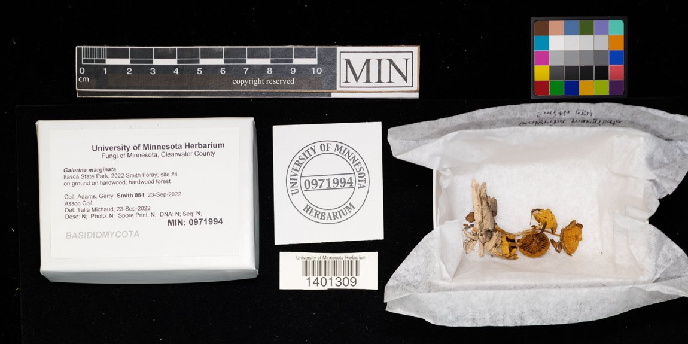
Z05-P11 · Dried Galerina collection parts with Bell label, accession and scale
Authentic institutional voucher image
Credit: MIN / Adams, Gerry · License: CC0 1.0 (https://creativecommons.org/publicdomain/zero/1.0/)
Locality/date: Minnesota, Clearwater; date=2022-09-23; basis=PRESERVED_SPECIMEN
Original SHA-256: 5616742f5926967c… · Acquired provider JPEG
Expert validation: PENDING · Diagnostic: WITHHELD · Consumption: WITHHELD_HOLD
Museum delivery JPEG (provider link). Need intact, matched-stage fruiting body, underside, attachment, ring/base and microscopic confirmation.
Source record
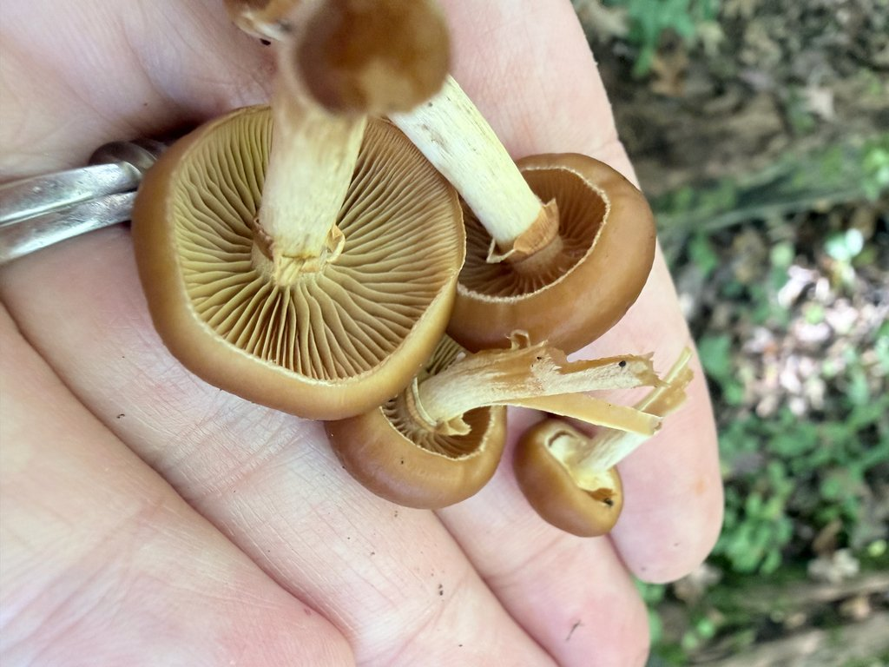
Z05-P11 · Field Galerina observation showing gills and partial stalks on a person’s hand
Authentic field observation study photograph (CC0/CC-BY)
Credit: iNaturalist / Erica Tava Johnson · License: CC BY 4.0 (https://creativecommons.org/licenses/by/4.0/)
Locality/date: Minnesota, locality in GBIF; date=2026-10-04; basis=HUMAN_OBSERVATION
Original SHA-256: 5ed3a4f74490ca8e… · Acquired provider JPEG
Expert validation: PENDING · Diagnostic: WITHHELD · Consumption: WITHHELD_HOLD
Provider resized medium/large JPEG. Archival observation only. Hand contact is not a field instruction. Need intact base, matched lookalike and curator determination.
Source record
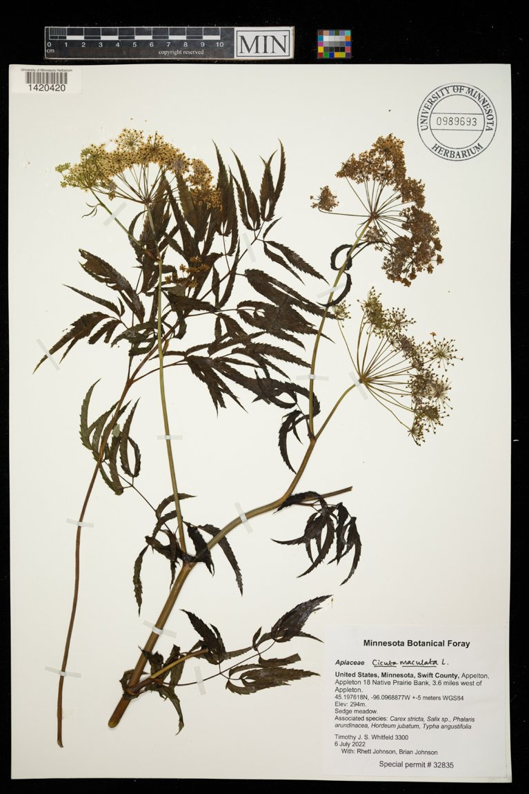
Z05-P12 · Pressed Cicuta sheet showing leaves and reproductive clusters with label
Authentic institutional voucher image
Credit: MIN / Timothy J. S. Whitfeld; Rhett Johnson, Brian Johnson · License: CC0 1.0 (https://creativecommons.org/publicdomain/zero/1.0/)
Locality/date: Minnesota, Swift; date=2022-07-06; basis=PRESERVED_SPECIMEN
Original SHA-256: 64a75cf876ac1c18… · Acquired provider JPEG
Expert validation: PENDING · Diagnostic: WITHHELD · Consumption: WITHHELD_HOLD
Museum delivery JPEG (provider link). Need fresh stage, leaf detail and independent current determination; no root sampling as a field instruction.
Source record
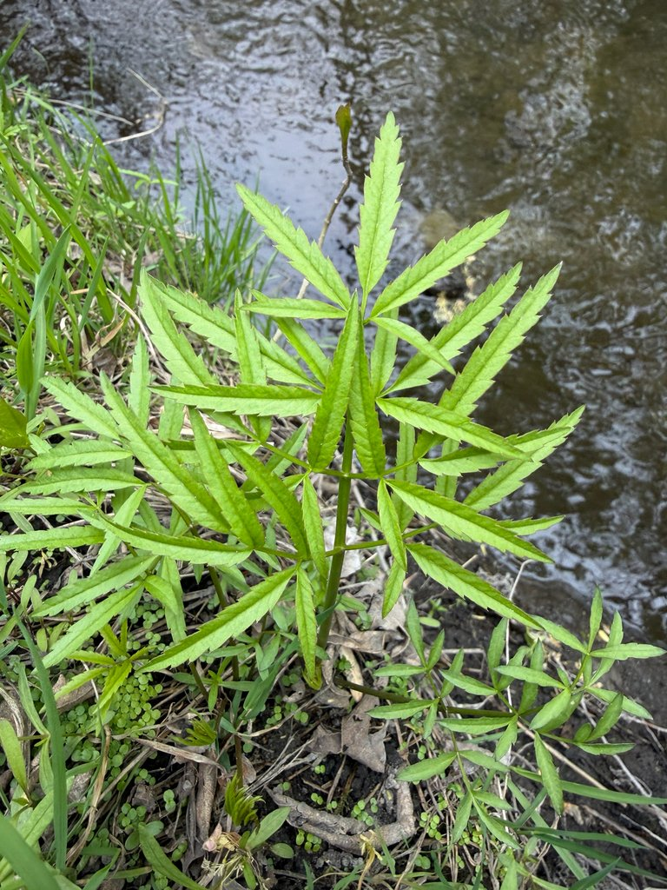
Z05-P12 · Wet-site field observation bearing narrow divided leaves
Authentic field observation study photograph (CC0/CC-BY)
Credit: iNaturalist / evangrimes · License: CC BY 4.0 (https://creativecommons.org/licenses/by/4.0/)
Locality/date: Minnesota, locality in GBIF; date=2026-05-12; basis=HUMAN_OBSERVATION
Original SHA-256: a14896d2c6984f9f… · Acquired provider JPEG
Expert validation: PENDING · Diagnostic: WITHHELD · Consumption: WITHHELD_HOLD
Provider resized medium/large JPEG. No verified reproductive, base or matched-stage lookalike view. Treat as a catalogue observation, not a safe ID.
Source record
 Z05-P12 · Museum-associated Chlorophyllum cap top and ruler
Z05-P12 · Museum-associated Chlorophyllum cap top and ruler
Authentic institutional voucher image
Credit: MIN / Etzwiler, Nancy · License: CC0 1.0 (https://creativecommons.org/publicdomain/zero/1.0/)
Locality/date: Minnesota, Wabasha; date=2019-09-21; basis=PRESERVED_SPECIMEN
Original SHA-256: 5b4786f6074dfc5c… · Acquired provider JPEG
Expert validation: PENDING · Diagnostic: WITHHELD · Consumption: WITHHELD_HOLD
Museum delivery JPEG (provider link). No underside, fertile surface, stem/base or spore character. This view does not establish species.
Source record
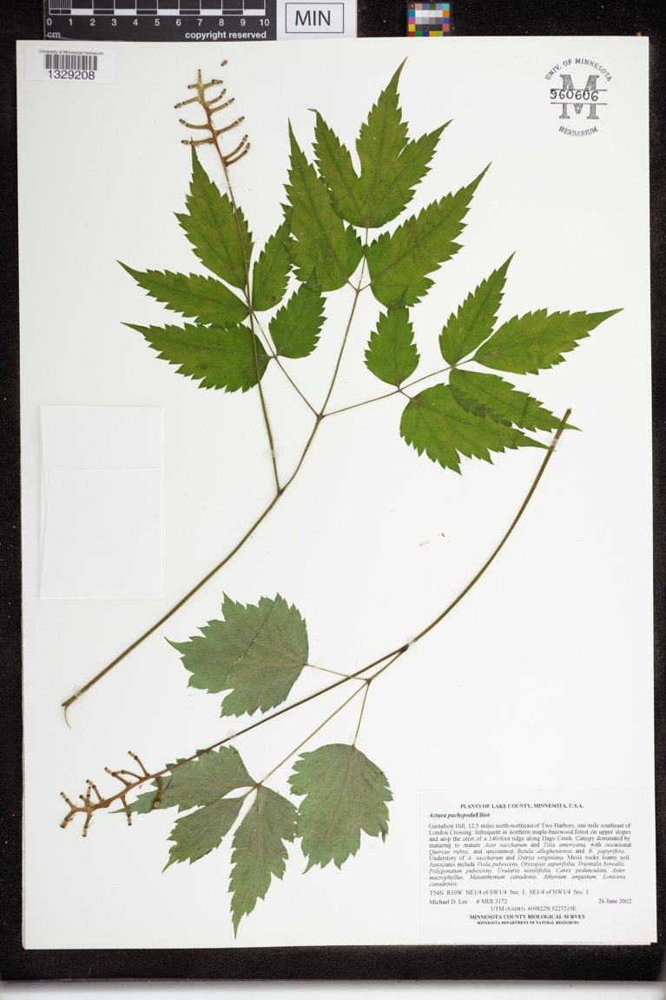
Z05-P12 · Pressed Actaea sheet showing leaf architecture and voucher
Authentic institutional voucher image
Credit: MIN / Lee, Michael · License: CC0 1.0 (https://creativecommons.org/publicdomain/zero/1.0/)
Locality/date: Minnesota, Lake; date=2002-06-26; basis=PRESERVED_SPECIMEN
Original SHA-256: 8c03ddbe099a3bb3… · Acquired provider JPEG
Expert validation: PENDING · Diagnostic: WITHHELD · Consumption: WITHHELD_HOLD
Museum delivery JPEG (provider link). Comparative ripe fruit, attachment, habitat and paired authenticated lookalike absent.
Source record
 Z05-P12 · Field Actaea foliage in mixed vegetation
Z05-P12 · Field Actaea foliage in mixed vegetation
Authentic field observation study photograph (CC0/CC-BY)
Credit: iNaturalist / Charlie Pavlisich · License: CC BY 4.0 (https://creativecommons.org/licenses/by/4.0/)
Locality/date: Minnesota, locality in GBIF; date=2026-09-09; basis=HUMAN_OBSERVATION
Original SHA-256: 3cc37e046a47911f… · Acquired provider JPEG
Expert validation: PENDING · Diagnostic: WITHHELD · Consumption: WITHHELD_HOLD
Provider resized medium/large JPEG. No diagnostic ripe fruit or pedicels; catalogue identity does not resolve surrounding foliage.
Source record
 Z05-P13 · Apparent poison ivy leaflets among woodland litter
Z05-P13 · Apparent poison ivy leaflets among woodland litter
Authentic field observation study photograph (CC0/CC-BY)
Credit: iNaturalist / Marilynn Miller · License: CC BY 4.0 (https://creativecommons.org/licenses/by/4.0/)
Locality/date: Minnesota, locality in GBIF; date=2026-06-26; basis=HUMAN_OBSERVATION
Original SHA-256: 7b1be07a6ee16c01… · Acquired provider JPEG
Expert validation: PENDING · Diagnostic: WITHHELD · Consumption: WITHHELD_HOLD
Provider resized medium/large JPEG. Need node/stem and same-stage alternatives. No contact cue or clearance.
Source record
 Z05-P13 · Basal foliage recorded as wild parsnip
Z05-P13 · Basal foliage recorded as wild parsnip
Authentic field observation study photograph (CC0/CC-BY)
Credit: iNaturalist / elonicera · License: CC0 1.0 (https://creativecommons.org/publicdomain/zero/1.0/)
Locality/date: Minnesota, locality in GBIF; date=2026-05-07; basis=HUMAN_OBSERVATION
Original SHA-256: 623f2fae16ca6c7f… · Acquired provider JPEG
Expert validation: PENDING · Diagnostic: WITHHELD · Consumption: WITHHELD_HOLD
Provider resized medium/large JPEG. Need mature diagnostic reproductive structures and curator-backed paired comparison; no handling cue.
Source record
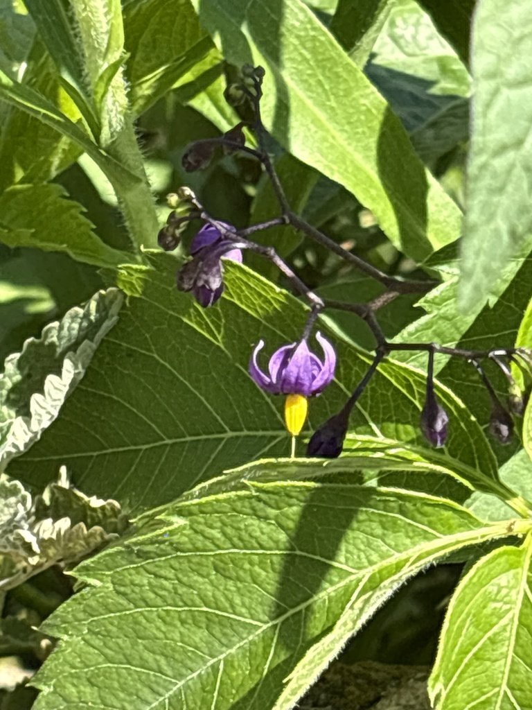
Z05-P12 · Flower and leaf detail catalogued as Solanum dulcamara
Authentic field observation study photograph (CC0/CC-BY)
Credit: iNaturalist / Bob · License: CC BY 4.0 (https://creativecommons.org/licenses/by/4.0/)
Locality/date: Minnesota, locality in GBIF; date=2026-05-24; basis=HUMAN_OBSERVATION
Original SHA-256: 547af5bca458c4d8… · Acquired provider JPEG
Expert validation: PENDING · Diagnostic: WITHHELD · Consumption: WITHHELD_HOLD
Provider resized medium/large JPEG. This is not a record of eastern black nightshade. Full fruit/stem context and paired taxa are still missing.
Source record
 Z05-P98 · Morel-like observation with cap and stem held by a gloved hand
Z05-P98 · Morel-like observation with cap and stem held by a gloved hand
Authentic field observation study photograph (CC0/CC-BY)
Credit: iNaturalist / Karli Cich · License: CC BY 4.0 (https://creativecommons.org/licenses/by/4.0/)
Locality/date: Minnesota, locality in GBIF; date=2026-04-29; basis=HUMAN_OBSERVATION
Original SHA-256: 7a19d245528892e6… · Acquired provider JPEG
Expert validation: PENDING · Diagnostic: WITHHELD · Consumption: WITHHELD_HOLD
Provider resized medium/large JPEG. Need intact base, validated interior and same-stage false-morel comparison. Handling is not instruction.
Source record
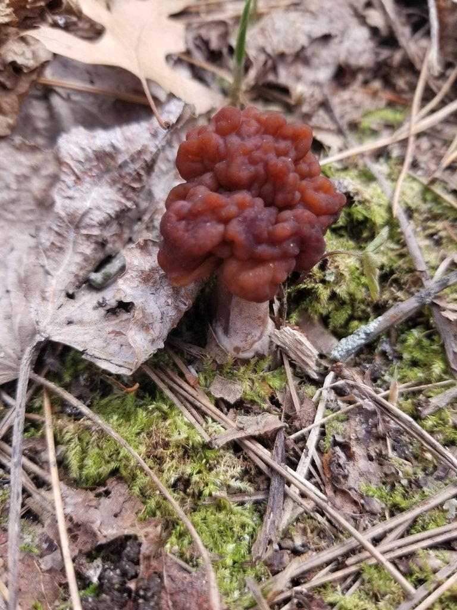
Z05-P11 · Field specimen catalogued as Gyromitra esculenta, exterior lobed head visible
Authentic field observation study photograph (CC0/CC-BY)
Credit: iNaturalist / Ashley Darst · License: CC BY 4.0 (https://creativecommons.org/licenses/by/4.0/)
Locality/date: Minnesota, locality in GBIF; date=2026-05-02; basis=HUMAN_OBSERVATION
Original SHA-256: a76aee1821677809… · Acquired provider JPEG
Expert validation: PENDING · Diagnostic: WITHHELD · Consumption: WITHHELD_HOLD
Provider resized medium/large JPEG. Does not document G. brunnea. Absent verified substrate/stem, interior and microscopy.
Source record
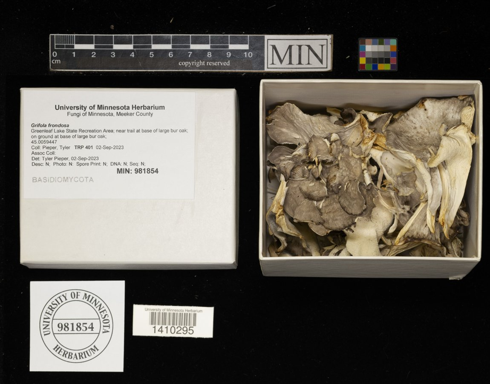
Z05-P10 · Grifola voucher packet with dried material, label and scale
Authentic institutional voucher image
Credit: MIN / Pieper, Tyler · License: CC0 1.0 (https://creativecommons.org/publicdomain/zero/1.0/)
Locality/date: Minnesota, Meeker; date=2023-09-02; basis=PRESERVED_SPECIMEN
Original SHA-256: 3c015ec6b9db258f… · Acquired provider JPEG
Expert validation: PENDING · Diagnostic: WITHHELD · Consumption: WITHHELD_HOLD
Museum delivery JPEG (provider link). Fresh growth form, pored undersurface and attachment absent.
Source record
 Z05-P11 · Armillaria repository labels and measuring reference; no visible fruiting body
Z05-P11 · Armillaria repository labels and measuring reference; no visible fruiting body
Authentic institutional voucher image
Credit: MIN / Vachuska, Colleen; Peter Vachuska · License: CC0 1.0 (https://creativecommons.org/publicdomain/zero/1.0/)
Locality/date: Minnesota, Brown; date=2021-10-05; basis=PRESERVED_SPECIMEN
Original SHA-256: a71d57ddbe710a46… · Acquired provider JPEG
Expert validation: PENDING · Diagnostic: WITHHELD · Consumption: WITHHELD_HOLD
Museum delivery JPEG (provider link). Label-only media cannot show morphology or supply a paired view.
Source record
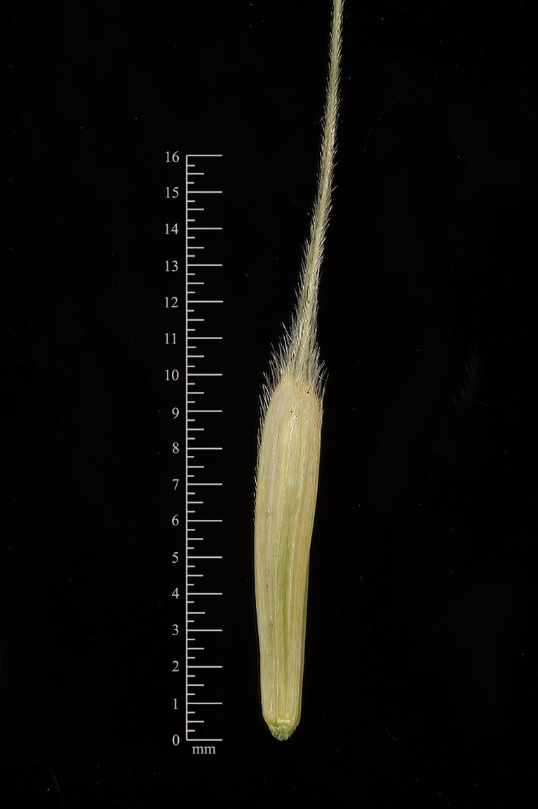
Z05-P79 · Isolated Zizania organ next to a scale
Authentic institutional voucher image
Credit: MIN / Smith, Welby R; Ann Geisen · License: CC0 1.0 (https://creativecommons.org/publicdomain/zero/1.0/)
Locality/date: Minnesota, Aitkin; date=2023-08-29; basis=PRESERVED_SPECIMEN
Original SHA-256: 911face2b6d744c7… · Acquired provider JPEG
Expert validation: PENDING · Diagnostic: WITHHELD · Consumption: WITHHELD_HOLD
Museum delivery JPEG (provider link). Whole habit, habitat, attachment and confusable species views absent.
Source record
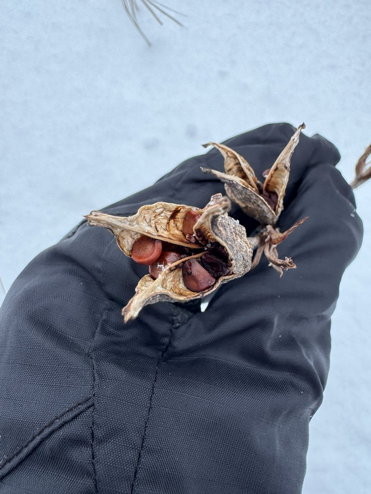
Z05-P83 · Iris field observation showing a mature open pod on a glove
Authentic field observation study photograph (CC0/CC-BY)
Credit: iNaturalist / Kevin Speray · License: CC BY 4.0 (https://creativecommons.org/licenses/by/4.0/)
Locality/date: Minnesota, locality in GBIF; date=2026-01-16; basis=HUMAN_OBSERVATION
Original SHA-256: 243c70840f7b046a… · Acquired provider JPEG
Expert validation: PENDING · Diagnostic: WITHHELD · Consumption: WITHHELD_HOLD
Provider resized medium/large JPEG. No confirmed flower, whole habit or paired lookalike view. Handling is not instruction.
Source record
 Z05-P85 · Young green shoot among leaf litter recorded as Allium tricoccum
Z05-P85 · Young green shoot among leaf litter recorded as Allium tricoccum
Authentic field observation study photograph (CC0/CC-BY)
Credit: iNaturalist / Bria Abeles-Allison · License: CC BY 4.0 (https://creativecommons.org/licenses/by/4.0/)
Locality/date: Minnesota, locality in GBIF; date=2026-04-05; basis=HUMAN_OBSERVATION
Original SHA-256: 0ae8c46b5d307251… · Acquired provider JPEG
Expert validation: PENDING · Diagnostic: WITHHELD · Consumption: WITHHELD_HOLD
Provider resized medium/large JPEG. Single early stage lacks mature leaf and reproductive characters. No smell, touch or edible inference.
Source record
 Z05-P92 · Field umbel recorded as Daucus carota in a flower close-up
Z05-P92 · Field umbel recorded as Daucus carota in a flower close-up
Authentic field observation study photograph (CC0/CC-BY)
Credit: iNaturalist / Bob · License: CC BY 4.0 (https://creativecommons.org/licenses/by/4.0/)
Locality/date: Minnesota, locality in GBIF; date=2026-06-23; basis=HUMAN_OBSERVATION
Original SHA-256: 02e1a6ab1056d7fb… · Acquired provider JPEG
Expert validation: PENDING · Diagnostic: WITHHELD · Consumption: WITHHELD_HOLD
Provider resized medium/large JPEG. Green parts, whole habit and verified poison-hemlock or water-hemlock comparisons absent.
Source record